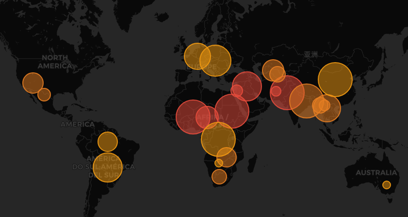
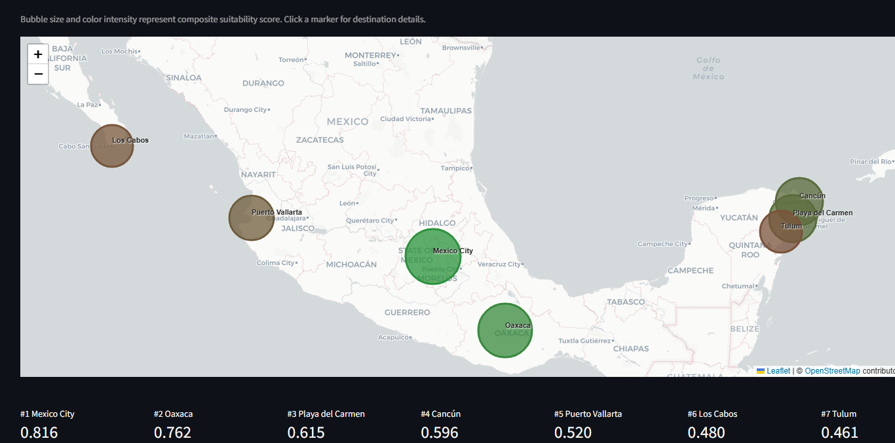
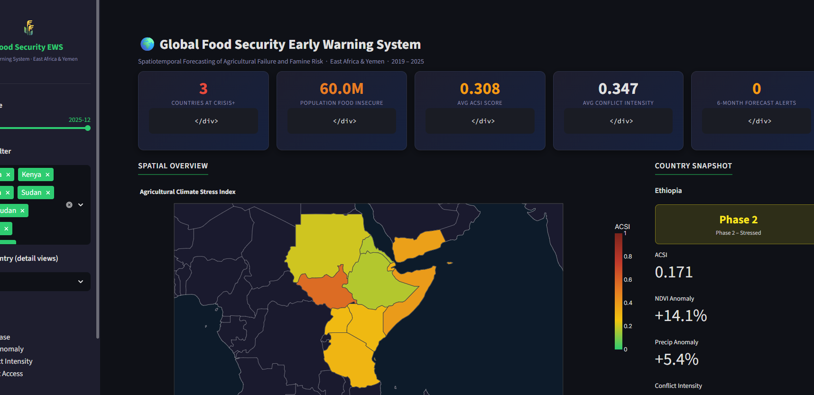
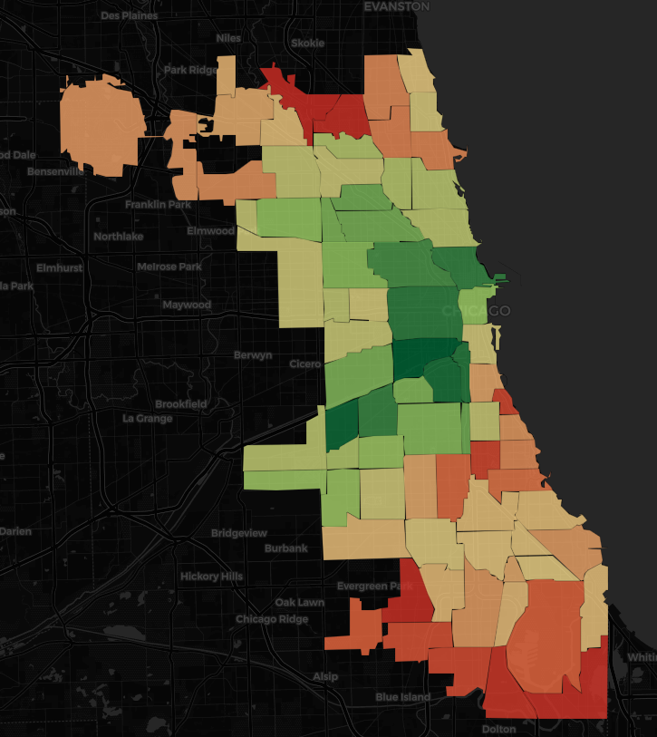
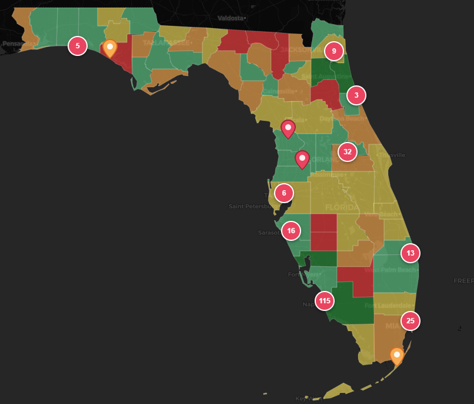
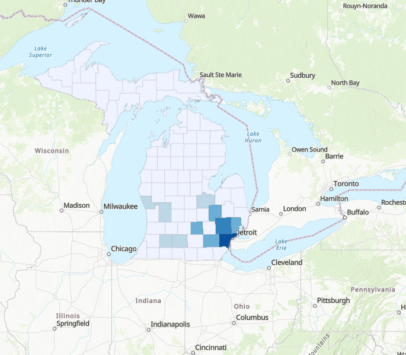
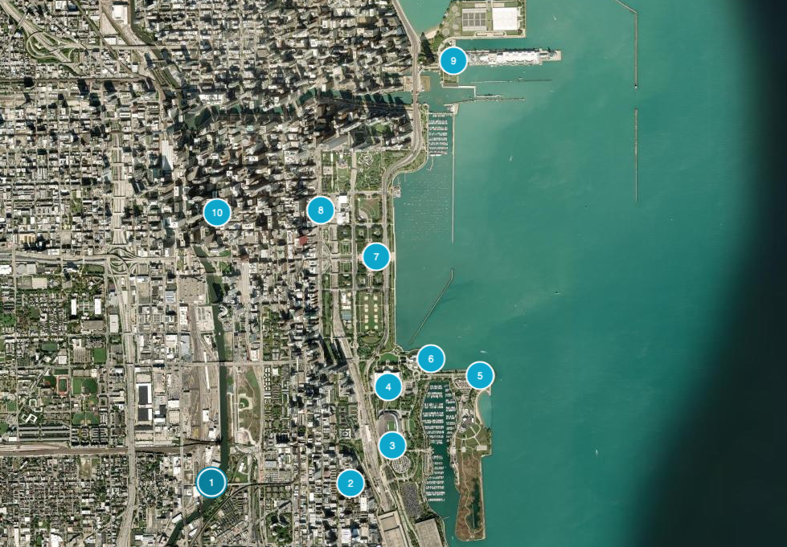
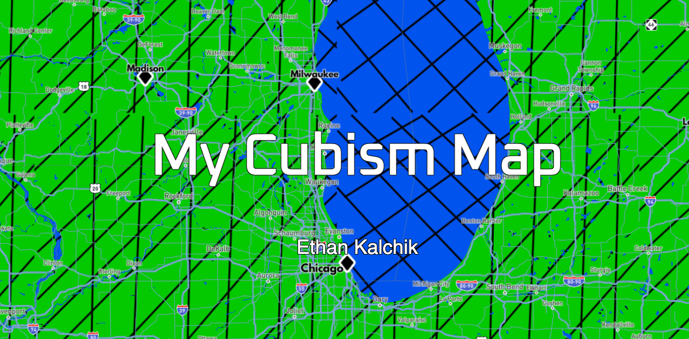

Scroll

National analysis of ~67,000 public elementary schools modeled against WHO cognitive development thresholds, examining whether low-income communities face disproportionate highway noise impacts.
View project
Transboundary water stress and geopolitical instability analytics using a Water Stress Conflict Index, Random Forest risk classification, spatial autocorrelation, and SSP climate scenario projections.
View project
Interactive multi-criteria decision analysis tool ranking Mexican destinations by accessibility, climate comfort, safety, and tourism amenities — with customizable traveler profiles and weighted overlays.
View project
Spatiotemporal dashboard forecasting agricultural failure and famine risk using NDVI anomalies, climate stress indices, conflict proximity, and ML-based IPC phase forecasting 6 months ahead.
View project
Urban vegetation intelligence platform tracking greenspace health across Chicago using Sentinel-2 satellite imagery, PostGIS, and AWS Cloud Optimized GeoTIFFs with time-series analysis and degradation flagging.
View project
Web mapping application for visualizing California wildfire perimeters, modeling fire risk by time of day, and generating dynamic evacuation routes.
View project
Interactive tool mapping fixed and mobile broadband coverage gaps across Illinois communities, combining Leaflet mapping with dynamic Chart.js analytics.
View project
IDW interpolation and linear regression exploring links between agricultural nitrate contamination and cancer rates across Wisconsin census tracts.
View project
Interactive Leaflet map exploring gated communities across Florida with clustering, price-range filtering, and detailed community profiles.
View project
Choropleth map analyzing Michigan State Police arrest data by county, published as an ArcGIS StoryMap.
View project
Interactive bicycle tour story map of Chicago highlighting key routes, landmarks, and cycling infrastructure.
View project
Cubism perspective map built with D3.js to visualize temporal geographic data through an artistic cartographic lens.
View project